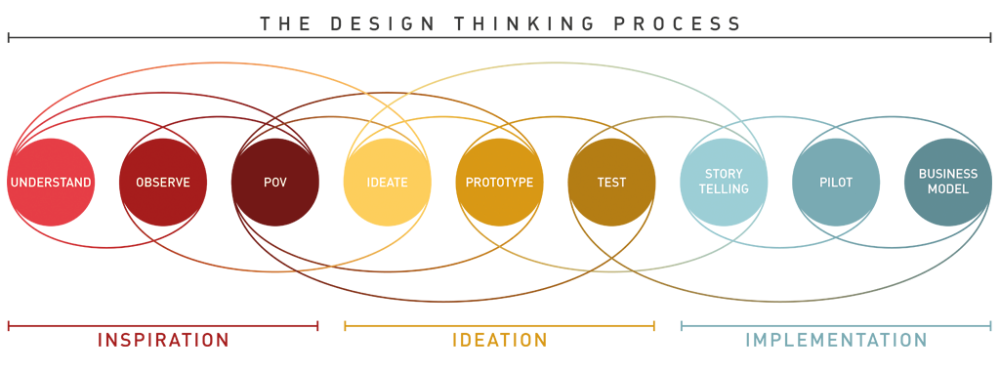

中国设计教育与互联网产业的双发展早就了一支庞大的设计师群体，每年都有几十万设计专业毕业生走进职场，对他们来说，第一年也许不是最关键的一年，但一定是最令人深刻的。本文想讨论的就是，这第一年要怎么过，才能对年轻设计师的你最有价值。
我想：能不能有个清单。我不能保证完成了清单上的每件事，你就会升值加薪，但是，当你拿着这份已经完成的清单给我看，我保证你会为自己高兴。
【项目1】完成多个项目，体验完整的设计
进入真实世界，你可能需要几年时间才能接触到所有你在设计专业中学到的东西，一开始，你往往工作在最底层某个最细碎的工作环节里。
但是，尽快了解设计全貌是一个优秀设计师的必修项，这里说的完整项目是指从发现问题、创意、概念、设计方案、测试、开发、投入使用、改进再到重新发现问题的过程。
 （一个设计思维中设计过程的例子）
现实一点，只有极少数设计师有机会参与从0到1000的过程，因此作为设计职场新人，只需要用多个项目拼凑成一个完整设计体验，它能够让你体会：
设计既不是只关于美、也不只是关于功能、更不只是关于钱，而是一个长期的社交活动（Social Game），一个成功的设计师需要和设计不同阶段的不同人打交道，共同完成设计；
设计过程的意义要大于设计结果，一个结果黑白分明、而你在过程中学习的东西要远远多于结果；
挑战不同工种和位置的乐趣，未来的设计师一定是「全栈设计师」的天下，成为「全栈设计师」的唯一途径唯有经历从不同阶段开始的项目。
【项目2】搞定一个不可理喻的客户
无论你在什么样的设计岗位，你一定有一位「客户」，可能是你的产品经理、为你付钱的客户、或者你的投资人，在现实世界里，你永远需要和他们打交道，越早遇到奇葩的客户，你的成长一定越快。
重要的是，用最不可理喻的客户去锻炼自己，慢慢的你就学会了如何回答「什么好设计」这样的问题；如何对付虚无缥缈的需求变化；如何应对「多出几稿」的请求；如何巧妙逼迫拖沓不愿负责的客户做决定；如何管理客户的期待和控制范围。
这些东西很奇特，就像骑车一样，一旦会了，就深深植入你的身体里，像一个自然反应一样永远存在，你越成熟、越比同龄人获得机会、越多机会、越成熟，你会比你想象成熟得快得多的多。
【项目3】无论多少，通过你的设计挣一笔钱
挣一笔外快是重要的，它潜移默化地影响了你的自信，当有人问你「什么是好的设计时」，你可以自信地说「客户为我买单的设计就是好设计」，这样的自信才是这个问题的真正答案。
同时能够完成支付的设计项目通常是相对完整的，在这个过程中你也学习了如何和客户确定需求、范围、和交付物，最后完成收款也可以体会一下商业和设计的关系。
一个好的生意应该是你交付了你应该交付的设计，同时这位客户愿意为你引荐给其他客户。我认为这样的外包项目一年两次便好，它不应该占据你过多主要工作时间，毕竟那才是你作为设计师成长的主战场。
【项目4】对真实世界做一次研究
设计师容易陷入「圈子」造成的幻觉，年轻设计师眼中的互联网可能就是那些「创业导师」、「产品老炮」、「自媒体大叔」、「知乎大神」们构造出来的世界，顶礼膜拜的同时，可能丢掉自己对真实世界的敏感。
(ThoughtWorks的设计师在北川香泉小学和孩子们一起做设计)
而缺少对真实世界的敏感，对不同群体缺乏好奇和同理心，最终有一天会阻碍你作为一个设计师的成长，因为我们始终应该为真实世界做设计。
睁开眼看看这个世界，比如比较一下你的妈妈和你朋友的妈妈使用手机应用的区别、收集200张厕所标识的图案、100个垃圾桶的设计，远比转个「18岁设计师估值过亿」的朋友圈文章更帮助你的成长。
【项目5】认识一个设计伙伴
不止一次地说，设计是可以做一辈子的，对我来说，它之所以是一个有趣的职业，是因为无论在做什么，你总能从设计的角度思考问题，做关于设计的思维游戏。
而思考需要伙伴，她/他让你第一时间把自己关于设计的思考分享给对方，听对方的意见，却无关对错。这样的伴侣，可以是前辈、也可以是同辈、甚至可以是后辈，有能够分享设计思考的朋友，对于设计师而言，非常重要。
【项目6】谈论一次关于设计是什么的话题
新入职场，大部分时间都被事务性、执行类的设计工作占据，很难真正静下来思考「对你来说，什么是设计」，很多人认为这是虚的、没有用，但我始终觉得，保持设计灵感、直冲要害、处事不惊的要义在于你对设计的理解。
回想自己的成长过程、可能需要花上4、5年才能真正理解设计是什么，但是对于设计的谈论，可能从一开始就可以进行了。细心的你应该可以发现，前四项让你有足够的内容进行思考，第五项让你有一位谈论的对象。
写在最后
设计师成长是一个永恒的话题，每个人都有一个成长的故事，回想自己的第一年，并没有完全做完这六件事情，也走了一些弯路，但至少在职业生涯第三年前，这六件事情我都已经完成，那么，作为初入设计职场一年的你，是否已经：
- 参与过设计过程的各个环节？
- 搞定一个不可理喻的客户？
- 通过设计挣到一笔钱？
- 对真实世界做过研究？
- 有一位设计伙伴？
- 进行一场关于设计是什么的讨论？
如果你在设计生涯的第一年就已经完成这些，我特别想听听你的故事，并且把这故事分享给更多年轻设计师。